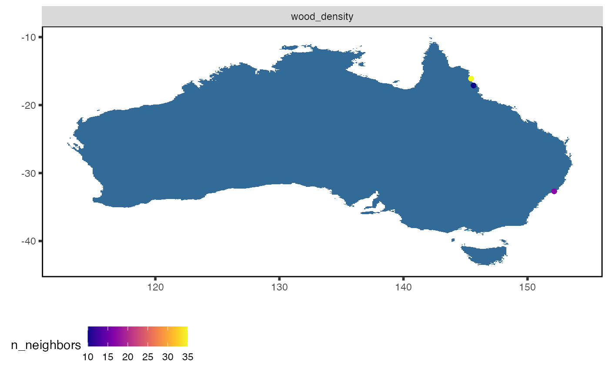
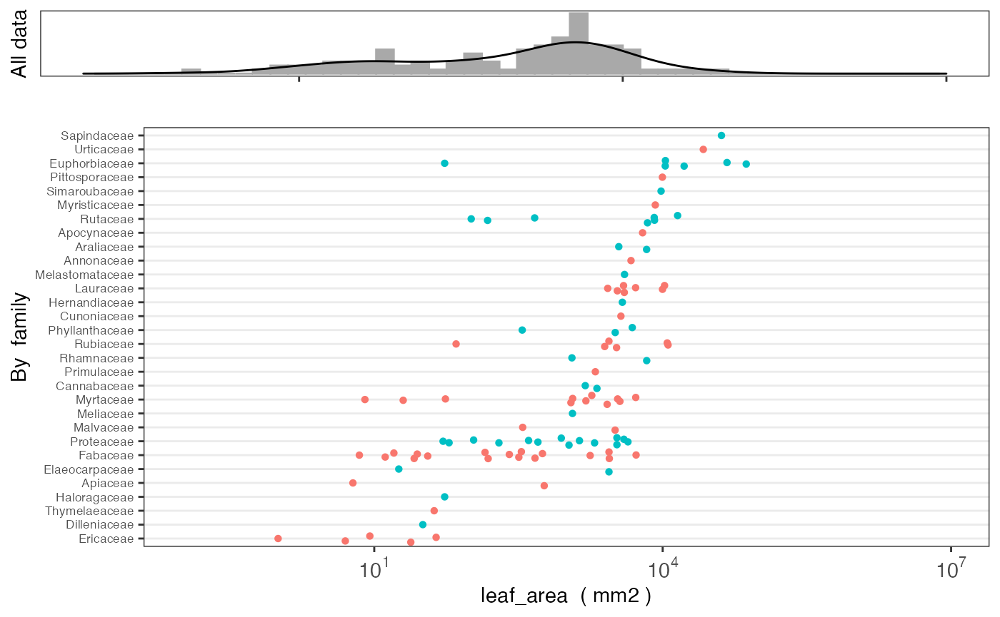
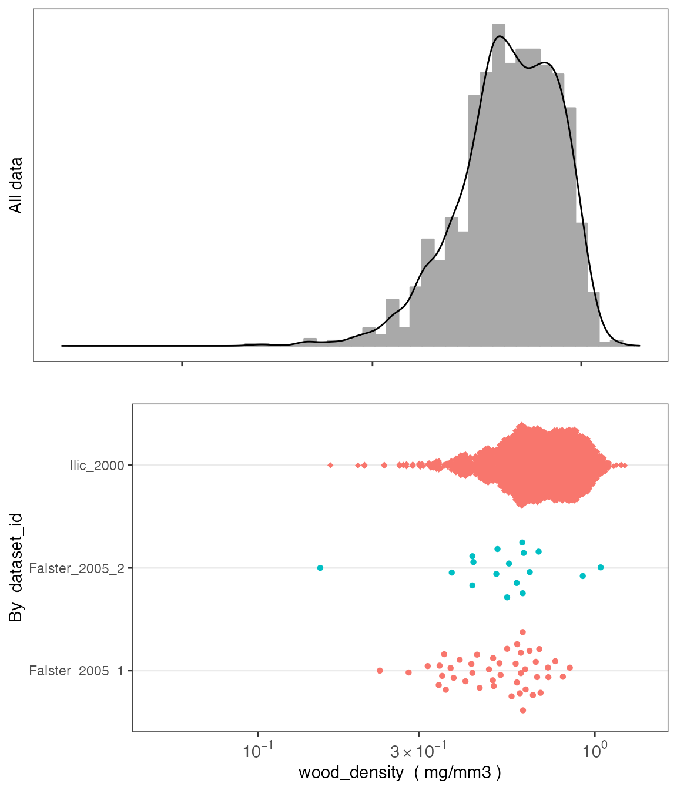

The austraits package is designed to aid users to access data from AusTraits, a curated plant trait database for the Australian flora. This package contains several core functions to wrangle and visualise data. Below we included a tutorial to illustrate how to use these functions in greater detail.
austraits is still under development. To install the current version from github
install.packages("remotes")
remotes::install_github("traitecoevo/austraits", build_vignettes = TRUE)
# Load the austraits package
library(austraits)
austraits <- load_austraits()Note the austraits object is a list with a bunch of elements:
names(austraits)#> [1] "traits" "sites" "contexts"
#> [4] "methods" "excluded_data" "taxonomic_updates"
#> [7] "taxa" "definitions" "contributors"
#> [10] "sources" "build_info"AusTraits contains 11 plant traits. In most cases, users would like to extract a subset of the dataset for their own research purposes. extract_datasetextracts a particular study, whereas extract_traitsubsets by certain traits. Note that the other tables and elements of the AusTraits data are extracted too, not just the main trait table. See ?extract_dataset and ?extract_trait for more details
Filtering one particular study and assigning it to an object
data_zanne_09 <- extract_dataset(austraits, "Zanne_2009")
data_zanne_09$traits#> # A tibble: 214 × 12
#> dataset_id taxon_name site_name context_name observation_id trait_name value
#> <chr> <chr> <chr> <chr> <chr> <chr> <chr>
#> 1 Zanne_2009 Acacia aul… <NA> <NA> Zanne_2009_001 wood_dens… 0.594
#> 2 Zanne_2009 Adenanther… <NA> <NA> Zanne_2009_002 wood_dens… 0.775
#> 3 Zanne_2009 Albizia pr… <NA> <NA> Zanne_2009_008 wood_dens… 0.56
#> 4 Zanne_2009 Aleurites … <NA> <NA> Zanne_2009_009 wood_dens… 0.327
#> 5 Zanne_2009 Alphitonia… <NA> <NA> Zanne_2009_010 wood_dens… 0.525
#> 6 Zanne_2009 Alstonia s… <NA> <NA> Zanne_2009_012 wood_dens… 0.327
#> 7 Zanne_2009 Alstonia s… <NA> <NA> Zanne_2009_013 wood_dens… 0.551
#> 8 Zanne_2009 Antiaris t… <NA> <NA> Zanne_2009_015 wood_dens… 0.344
#> 9 Zanne_2009 Araucaria … <NA> <NA> Zanne_2009_016 wood_dens… 0.439
#> 10 Zanne_2009 Avicennia … <NA> <NA> Zanne_2009_019 wood_dens… 0.732
#> # … with 204 more rows, and 5 more variables: unit <chr>, date <chr>,
#> # value_type <fct>, replicates <chr>, original_name <chr>Filtering multiple studies by same lead author (e.g. Falster) and assigning it to an object
data_falster_studies <- extract_dataset(austraits,
dataset_id = c("Falster_2003","Falster_2005_1"))
data_falster_studies$traits#> # A tibble: 520 × 12
#> dataset_id taxon_name site_name context_name observation_id trait_name value
#> <chr> <chr> <chr> <chr> <chr> <chr> <chr>
#> 1 Falster_20… Acacia my… Ku-ring-… <NA> Falster_2003_… leaf_angle 66.1
#> 2 Falster_20… Acacia my… Ku-ring-… <NA> Falster_2003_… leaf_area 319
#> 3 Falster_20… Acacia my… Ku-ring-… <NA> Falster_2003_… leaf_comp… simp…
#> 4 Falster_20… Acacia su… Ku-ring-… <NA> Falster_2003_… leaf_angle 71.7
#> 5 Falster_20… Acacia su… Ku-ring-… <NA> Falster_2003_… leaf_area 562
#> 6 Falster_20… Acacia su… Ku-ring-… <NA> Falster_2003_… leaf_comp… simp…
#> 7 Falster_20… Angophora… Ku-ring-… <NA> Falster_2003_… leaf_angle 50.8
#> 8 Falster_20… Angophora… Ku-ring-… <NA> Falster_2003_… leaf_area 1590
#> 9 Falster_20… Angophora… Ku-ring-… <NA> Falster_2003_… leaf_comp… simp…
#> 10 Falster_20… Banksia m… Ku-ring-… <NA> Falster_2003_… leaf_angle 53.1
#> # … with 510 more rows, and 5 more variables: unit <chr>, date <chr>,
#> # value_type <fct>, replicates <chr>, original_name <chr>Identify all studies with an id that includes “Falster”
#> [1] "Falster_2003" "Falster_2005_1" "Falster_2005_2"
data_falster_studies <- extract_dataset(austraits, dataset_ids)
data_falster_studies$traits#> # A tibble: 691 × 12
#> dataset_id taxon_name site_name context_name observation_id trait_name value
#> <chr> <chr> <chr> <chr> <chr> <chr> <chr>
#> 1 Falster_20… Acacia my… Ku-ring-… <NA> Falster_2003_… leaf_angle 66.1
#> 2 Falster_20… Acacia my… Ku-ring-… <NA> Falster_2003_… leaf_area 319
#> 3 Falster_20… Acacia my… Ku-ring-… <NA> Falster_2003_… leaf_comp… simp…
#> 4 Falster_20… Acacia su… Ku-ring-… <NA> Falster_2003_… leaf_angle 71.7
#> 5 Falster_20… Acacia su… Ku-ring-… <NA> Falster_2003_… leaf_area 562
#> 6 Falster_20… Acacia su… Ku-ring-… <NA> Falster_2003_… leaf_comp… simp…
#> 7 Falster_20… Angophora… Ku-ring-… <NA> Falster_2003_… leaf_angle 50.8
#> 8 Falster_20… Angophora… Ku-ring-… <NA> Falster_2003_… leaf_area 1590
#> 9 Falster_20… Angophora… Ku-ring-… <NA> Falster_2003_… leaf_comp… simp…
#> 10 Falster_20… Banksia m… Ku-ring-… <NA> Falster_2003_… leaf_angle 53.1
#> # … with 681 more rows, and 5 more variables: unit <chr>, date <chr>,
#> # value_type <fct>, replicates <chr>, original_name <chr>Filtering one particular trait and assigning it to an object
data_wood_dens <- extract_trait(austraits, "wood_density")
data_wood_dens$traits#> # A tibble: 276 × 12
#> dataset_id taxon_name site_name context_name observation_id trait_name value
#> <chr> <chr> <chr> <chr> <chr> <chr> <dbl>
#> 1 Falster_20… Acacia ce… Atherton <NA> Falster_2005_… wood_dens… 0.498
#> 2 Falster_20… Acronychi… Atherton <NA> Falster_2005_… wood_dens… 0.525
#> 3 Falster_20… Alphitoni… Atherton <NA> Falster_2005_… wood_dens… 0.413
#> 4 Falster_20… Glochidio… Atherton <NA> Falster_2005_… wood_dens… 0.566
#> 5 Falster_20… Homalanth… Atherton <NA> Falster_2005_… wood_dens… 0.319
#> 6 Falster_20… Melicope … Atherton <NA> Falster_2005_… wood_dens… 0.346
#> 7 Falster_20… Neolitsea… Atherton <NA> Falster_2005_… wood_dens… 0.352
#> 8 Falster_20… Polyscias… Atherton <NA> Falster_2005_… wood_dens… 0.397
#> 9 Falster_20… Psychotri… Atherton <NA> Falster_2005_… wood_dens… 0.582
#> 10 Falster_20… Rhodomyrt… Atherton <NA> Falster_2005_… wood_dens… 0.763
#> # … with 266 more rows, and 5 more variables: unit <chr>, date <chr>,
#> # value_type <fct>, replicates <chr>, original_name <chr>Filtering all traits with leaf in the name
#> [1] "leaf_angle" "leaf_area" "leaf_compoundness"
#> [4] "leaf_N_per_dry_mass" "specific_leaf_area"
data_leaf <- extract_trait(austraits, leaf_traits) # Extract from austraits
data_leaf$traits#> # A tibble: 306 × 12
#> dataset_id taxon_name site_name context_name observation_id trait_name value
#> <chr> <chr> <chr> <chr> <chr> <chr> <dbl>
#> 1 Falster_2… Acacia my… Ku-ring-… <NA> Falster_2003_… leaf_angle 66.1
#> 2 Falster_2… Acacia my… Ku-ring-… <NA> Falster_2003_… leaf_area 319
#> 3 Falster_2… Acacia my… Ku-ring-… <NA> Falster_2003_… leaf_comp… NA
#> 4 Falster_2… Acacia su… Ku-ring-… <NA> Falster_2003_… leaf_angle 71.7
#> 5 Falster_2… Acacia su… Ku-ring-… <NA> Falster_2003_… leaf_area 562
#> 6 Falster_2… Acacia su… Ku-ring-… <NA> Falster_2003_… leaf_comp… NA
#> 7 Falster_2… Angophora… Ku-ring-… <NA> Falster_2003_… leaf_angle 50.8
#> 8 Falster_2… Angophora… Ku-ring-… <NA> Falster_2003_… leaf_area 1590
#> 9 Falster_2… Angophora… Ku-ring-… <NA> Falster_2003_… leaf_comp… NA
#> 10 Falster_2… Banksia m… Ku-ring-… <NA> Falster_2003_… leaf_angle 53.1
#> # … with 296 more rows, and 5 more variables: unit <chr>, date <chr>,
#> # value_type <fct>, replicates <chr>, original_name <chr>Once users have extracted the data they want, they may want to merge in other study details into the main traits dataframe for their analyses. For example, users may require taxonomic information for a phylogenetic analysis. This is where the join_ functions come in. There are five join_ functions in total, each designed to append specific information from other tables and elements in the austraits object. Their suffixes refer to the type of information that is joined, e.g. join_taxonomy appends taxonomic information to the traits dataframe. See ?join_all for more details.
# Join taxonomic information
(data_leaf %>% join_taxonomy)$traits#> # A tibble: 306 × 16
#> dataset_id taxon_name site_name context_name observation_id trait_name value
#> <chr> <chr> <chr> <chr> <chr> <chr> <dbl>
#> 1 Falster_2… Acacia my… Ku-ring-… <NA> Falster_2003_… leaf_angle 66.1
#> 2 Falster_2… Acacia my… Ku-ring-… <NA> Falster_2003_… leaf_area 319
#> 3 Falster_2… Acacia my… Ku-ring-… <NA> Falster_2003_… leaf_comp… NA
#> 4 Falster_2… Acacia su… Ku-ring-… <NA> Falster_2003_… leaf_angle 71.7
#> 5 Falster_2… Acacia su… Ku-ring-… <NA> Falster_2003_… leaf_area 562
#> 6 Falster_2… Acacia su… Ku-ring-… <NA> Falster_2003_… leaf_comp… NA
#> 7 Falster_2… Angophora… Ku-ring-… <NA> Falster_2003_… leaf_angle 50.8
#> 8 Falster_2… Angophora… Ku-ring-… <NA> Falster_2003_… leaf_area 1590
#> 9 Falster_2… Angophora… Ku-ring-… <NA> Falster_2003_… leaf_comp… NA
#> 10 Falster_2… Banksia m… Ku-ring-… <NA> Falster_2003_… leaf_angle 53.1
#> # … with 296 more rows, and 9 more variables: unit <chr>, date <chr>,
#> # value_type <fct>, replicates <chr>, original_name <chr>, family <chr>,
#> # genus <chr>, taxonRank <chr>, acceptedNameUsageID <chr>
# Join methodological information
(data_leaf %>% join_methods)$traits#> # A tibble: 306 × 16
#> dataset_id taxon_name site_name context_name observation_id trait_name value
#> <chr> <chr> <chr> <chr> <chr> <chr> <dbl>
#> 1 Falster_2… Acacia my… Ku-ring-… <NA> Falster_2003_… leaf_angle 66.1
#> 2 Falster_2… Acacia my… Ku-ring-… <NA> Falster_2003_… leaf_area 319
#> 3 Falster_2… Acacia my… Ku-ring-… <NA> Falster_2003_… leaf_comp… NA
#> 4 Falster_2… Acacia su… Ku-ring-… <NA> Falster_2003_… leaf_angle 71.7
#> 5 Falster_2… Acacia su… Ku-ring-… <NA> Falster_2003_… leaf_area 562
#> 6 Falster_2… Acacia su… Ku-ring-… <NA> Falster_2003_… leaf_comp… NA
#> 7 Falster_2… Angophora… Ku-ring-… <NA> Falster_2003_… leaf_angle 50.8
#> 8 Falster_2… Angophora… Ku-ring-… <NA> Falster_2003_… leaf_area 1590
#> 9 Falster_2… Angophora… Ku-ring-… <NA> Falster_2003_… leaf_comp… NA
#> 10 Falster_2… Banksia m… Ku-ring-… <NA> Falster_2003_… leaf_angle 53.1
#> # … with 296 more rows, and 9 more variables: unit <chr>, date <chr>,
#> # value_type <fct>, replicates <chr>, original_name <chr>, methods <chr>,
#> # year_collected_start <chr>, year_collected_end <chr>, collection_type <chr>
# Join site based information
(data_leaf %>% join_sites)$traits#> # A tibble: 306 × 14
#> dataset_id taxon_name site_name context_name observation_id trait_name value
#> <chr> <chr> <chr> <chr> <chr> <chr> <dbl>
#> 1 Falster_2… Acacia my… Ku-ring-… <NA> Falster_2003_… leaf_angle 66.1
#> 2 Falster_2… Acacia my… Ku-ring-… <NA> Falster_2003_… leaf_area 319
#> 3 Falster_2… Acacia my… Ku-ring-… <NA> Falster_2003_… leaf_comp… NA
#> 4 Falster_2… Acacia su… Ku-ring-… <NA> Falster_2003_… leaf_angle 71.7
#> 5 Falster_2… Acacia su… Ku-ring-… <NA> Falster_2003_… leaf_area 562
#> 6 Falster_2… Acacia su… Ku-ring-… <NA> Falster_2003_… leaf_comp… NA
#> 7 Falster_2… Angophora… Ku-ring-… <NA> Falster_2003_… leaf_angle 50.8
#> 8 Falster_2… Angophora… Ku-ring-… <NA> Falster_2003_… leaf_area 1590
#> 9 Falster_2… Angophora… Ku-ring-… <NA> Falster_2003_… leaf_comp… NA
#> 10 Falster_2… Banksia m… Ku-ring-… <NA> Falster_2003_… leaf_angle 53.1
#> # … with 296 more rows, and 7 more variables: unit <chr>, date <chr>,
#> # value_type <fct>, replicates <chr>, original_name <chr>,
#> # latitude (deg) <chr>, longitude (deg) <chr>
# Join context information
(data_leaf %>% join_contexts)$traits#> # A tibble: 306 × 12
#> dataset_id taxon_name site_name context_name observation_id trait_name value
#> <chr> <chr> <chr> <chr> <chr> <chr> <dbl>
#> 1 Falster_2… Acacia my… Ku-ring-… <NA> Falster_2003_… leaf_angle 66.1
#> 2 Falster_2… Acacia my… Ku-ring-… <NA> Falster_2003_… leaf_area 319
#> 3 Falster_2… Acacia my… Ku-ring-… <NA> Falster_2003_… leaf_comp… NA
#> 4 Falster_2… Acacia su… Ku-ring-… <NA> Falster_2003_… leaf_angle 71.7
#> 5 Falster_2… Acacia su… Ku-ring-… <NA> Falster_2003_… leaf_area 562
#> 6 Falster_2… Acacia su… Ku-ring-… <NA> Falster_2003_… leaf_comp… NA
#> 7 Falster_2… Angophora… Ku-ring-… <NA> Falster_2003_… leaf_angle 50.8
#> 8 Falster_2… Angophora… Ku-ring-… <NA> Falster_2003_… leaf_area 1590
#> 9 Falster_2… Angophora… Ku-ring-… <NA> Falster_2003_… leaf_comp… NA
#> 10 Falster_2… Banksia m… Ku-ring-… <NA> Falster_2003_… leaf_angle 53.1
#> # … with 296 more rows, and 5 more variables: unit <chr>, date <chr>,
#> # value_type <fct>, replicates <chr>, original_name <chr>
# Alternatively users can join *all* information
(data_leaf %>% join_all)$traits#> # A tibble: 306 × 22
#> dataset_id taxon_name site_name context_name observation_id trait_name value
#> <chr> <chr> <chr> <chr> <chr> <chr> <dbl>
#> 1 Falster_2… Acacia my… Ku-ring-… <NA> Falster_2003_… leaf_angle 66.1
#> 2 Falster_2… Acacia my… Ku-ring-… <NA> Falster_2003_… leaf_area 319
#> 3 Falster_2… Acacia my… Ku-ring-… <NA> Falster_2003_… leaf_comp… NA
#> 4 Falster_2… Acacia su… Ku-ring-… <NA> Falster_2003_… leaf_angle 71.7
#> 5 Falster_2… Acacia su… Ku-ring-… <NA> Falster_2003_… leaf_area 562
#> 6 Falster_2… Acacia su… Ku-ring-… <NA> Falster_2003_… leaf_comp… NA
#> 7 Falster_2… Angophora… Ku-ring-… <NA> Falster_2003_… leaf_angle 50.8
#> 8 Falster_2… Angophora… Ku-ring-… <NA> Falster_2003_… leaf_area 1590
#> 9 Falster_2… Angophora… Ku-ring-… <NA> Falster_2003_… leaf_comp… NA
#> 10 Falster_2… Banksia m… Ku-ring-… <NA> Falster_2003_… leaf_angle 53.1
#> # … with 296 more rows, and 15 more variables: unit <chr>, date <chr>,
#> # value_type <fct>, replicates <chr>, original_name <chr>,
#> # latitude (deg) <chr>, longitude (deg) <chr>, family <chr>, genus <chr>,
#> # taxonRank <chr>, acceptedNameUsageID <chr>, methods <chr>,
#> # year_collected_start <chr>, year_collected_end <chr>, collection_type <chr>plot_site_locations graphically summarises where trait data was collected from and how much data is available. The legend refers to the number of neighbouring points, the more warmer the colour, the more data is available. This function only works for studies that are geo-referenced. Users must first use join_sites to append latitude and longtitude information into the trait dataframe before plotting
data_wood_dens <- data_wood_dens %>% join_sites
data_wood_dens$traits %>% plot_site_locations()
plot_trait_distribution creates histograms and beeswarm plots for specific traits to help users visualise the variance of the data. Users can specific whether to create seperate beeswarm plots at the level of taxonomic family or for each dataset_id
austraits %>% plot_trait_distribution_beeswarm("wood_density", "family")
austraits %>% plot_trait_distribution_beeswarm("wood_density", "dataset_id")
The table of traits in AusTraits comes in long format, where data for all traits are in two columns called trait_name and value. You can convert to wide format, where each trait is in a separate column, using the function trait_pivot_wider.
data_wide <- data_falster_studies$traits %>% trait_pivot_wider()The returned object is a list with several parts:
data_wide %>% names()#> [1] "value" "unit" "date" "value_type" "replicates"Looking at the value element, it now has columns for each trait:
data_wide$value %>% names()#> [1] "dataset_id" "taxon_name" "site_name"
#> [4] "context_name" "observation_id" "original_name"
#> [7] "leaf_angle" "leaf_area" "leaf_compoundness"
#> [10] "branch_mass_fraction" "huber_value" "leaf_N_per_dry_mass"
#> [13] "seed_mass" "specific_leaf_area" "wood_density"
#> [16] "fire_response" "plant_height"
data_wide$value#> # A tibble: 691 × 17
#> dataset_id taxon_name site_name context_name observation_id original_name
#> <chr> <chr> <chr> <chr> <chr> <chr>
#> 1 Falster_2003 Acacia myr… Ku-ring-g… <NA> Falster_2003_… Acacia myrti…
#> 2 Falster_2003 Acacia myr… Ku-ring-g… <NA> Falster_2003_… Acacia myrti…
#> 3 Falster_2003 Acacia myr… Ku-ring-g… <NA> Falster_2003_… Acacia myrti…
#> 4 Falster_2003 Acacia sua… Ku-ring-g… <NA> Falster_2003_… Acacia suave…
#> 5 Falster_2003 Acacia sua… Ku-ring-g… <NA> Falster_2003_… Acacia suave…
#> 6 Falster_2003 Acacia sua… Ku-ring-g… <NA> Falster_2003_… Acacia suave…
#> 7 Falster_2003 Angophora … Ku-ring-g… <NA> Falster_2003_… Angophora hi…
#> 8 Falster_2003 Angophora … Ku-ring-g… <NA> Falster_2003_… Angophora hi…
#> 9 Falster_2003 Angophora … Ku-ring-g… <NA> Falster_2003_… Angophora hi…
#> 10 Falster_2003 Banksia ma… Ku-ring-g… <NA> Falster_2003_… Banksia marg…
#> # … with 681 more rows, and 11 more variables: leaf_angle <chr>,
#> # leaf_area <chr>, leaf_compoundness <chr>, branch_mass_fraction <chr>,
#> # huber_value <chr>, leaf_N_per_dry_mass <chr>, seed_mass <chr>,
#> # specific_leaf_area <chr>, wood_density <chr>, fire_response <chr>,
#> # plant_height <chr>